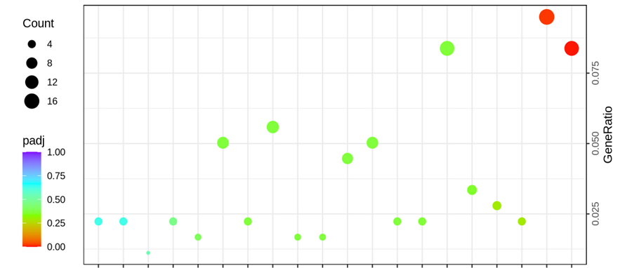

Douglas Stuehler
I am a post baccalaureate molecular biologist trained in computational biology. My research is driven to uncover and understand the plasticity of genetic information which creates such immense yet controlled diversity. This page showcases research on insects, plants, stingrays, bacteria, and viruses.
My current position as a DOE ORISE scholar consists of designing bioinformatic pipelines for research in vector biology and population genetics. My work is supported by a devotion to reduce ambiguity and set biologically informed standards in bioinformatic research.
I am currently a research scholar of Bioinformatics, Genomics, and Molecular Biology in the USDA-ARS Heck lab at Cornell University, Ithaca. I earned my BS in Molecular biology with a minor in Chemistry in 2021 from the University of Illinois Urbana-Champaign. The major focus of my current research entails finding chinks in the armor of the Huanglongbing tritrpohic pathosystem consisting of pathogen Candidatus Liberibacter asiaticus (CLas), vector Diaphorina citri, and host citrus species.
Huanglongbing (HLB)
The Asian citrus psyllid, Diaphorina citri, is an insect pest known to vector "Candidatus Liberibacter asiaticus" (CLas), the bacterium responsible for Huanglongbing (HLB). I have explored metageomic, transcriptomic, proteomic, and sRNA datasets to identify therapeutic targets and discern populations genetics.
Genetics and Genomics of Diaphorina citri
I am currently performing a GWAS to examine vector compentecy of D. citri from four populations, the first study of its kind examining vector competency besides research performed with mosquitos. The ability to acquire and transmit CLas was previously characterized as a heritable trait (https://doi.org/10.1371/journal.pone.0195804) and we attempt to uncover the genetics driving this phenomena.
Metagenomics and Proteomics of Candidatus Liberibacter asiaticus
In handling CLas genomes I have performed associative analytics with D. citri endosymbionts, strain tracking, and effector characterization. I have worked on protocols to enrich for non-eukayotic DNA allowing for deepened sequencing of microbial communities from individual insects. CLas-enriched DNA sequencing paired with strain tracking and high quality SNP analysis will help to trace any outbreaks of antibiotic resistant CLas strains.
Transcriptomics of Leuronota fagarae

My first project with the USDA-ARS was to characterize a novel picorna-like virus in L. fagarae, a closely related psyllid of D. citri. The use of virus capsid architecture to deliver siRNAs is efficient and the identification of a new virus solidifies the picorna-like virus as a well established infector of psyllids in Florida.
This is the subtext for section 3, giving additional context or information.
Genetics of Agrobacterium and Symbiont Technology

My research of crown gall inducing Agrobacterium species was used to identify genes facilitating gall formation. As part of an ARSX team I further identified Agrobacterium strains and what genes would be required to create N2 fixing symbionts, transfected plant tissue supplying nitrogen to plants.
Transcriptomics of Mandarin genotypes and HLB tolerance

The first differential gene expression study I performed examined the response, to CLas infection, of two HLB tolerant and two HLB susceptible mandarin genotypes. Pathway enrichment revealed transcripts belonging to Plant-pathogen interaction pathways were upregualted in tolerant genotypes and downregualted in susceptible genotypes. The identification of these genes has helped to broaden our understanding of plant immunity and effector biology.
Mantabodies - Stingray Nanobodies

One of my favorite projects is involved with the immune system of stingrays in collaboration with the winners of the 2022 ARSX competition. My part in the project was to assemble and annotate the genomes of the Atlantic and Southern stingrays in order to characterized germline IgNAR loci. As a single domain heavy chain antibody, the IgNAR and its variable region (VNAR) showcases a highly adaptable, stable, and nimble therapeutic molecule. We look to characterize the genetics behind this antibody and explore its use in plants, to bolster their immune systems and fight off foreign pathogens.
This is the subtext for section 2, giving additional context or information.
Cotton Virology
One of the most complicated genomes I have worked with is that of Gossypium hirsutum, an allopolyploid species contributing to at least 90% of cotton production worldwide. Members of the Heck laboratory classified an undiscovered DNA virus, cotton virus A (CotV-A), which now has endogenous sequence identified in many commerical and wild cotton species. My role for this project was to perform chromosomal synteny analysis of G. hirsutum varieties, pathway enrichment analysis of genes surrounding sites of CotV-A integration in G. hirsutum varities, and to classify the aphid transmission factor (ATF) and the virion-associated protein (VAP) through structural analysis.
This is the subtext for section 3, giving additional context or information.
Insect Antiviral Immunity
Viral modulation of host insect sRNA response is a well documented phenomema in entomology, however to the extent at which this modulation is related to other pathogens (viruses and bacteria) within the host insect is still not clearly understood. Our study of insect sRNA responses to viral infection in Myzus persicae and Diaphorina citri has revealed an evolutionarily conserved ability of circulative plant pathogens to regulate antiviral immunity in hemipteran vectors. In both hosts sRNA production against Flaviviruses was nearly abolished when hosts were infected with pathogens CLas (D. citri) and PLRV (M. persicae). This finding opens a new line of research into how insect-specific viruses influence transmission of circulative pathogens.
This is the subtext for section 4, giving additional context or information.
Field Work
Video credit: Dr. Michelle Heck
Field work I've performed around southeast Florida consists of sample collection and drilling trees for injections.
This is the subtext for section 5, giving additional context or information.
Dissemination of Research
This is the main text for section 5.
This is the subtext for section 5, giving additional context or information.